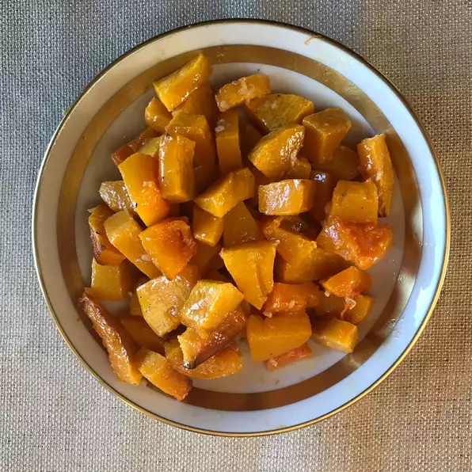

Butternut Squash (baked)

Description
Butternut squash is so good on its own, that barely any seasoning is needed. This recipe is simple, and easy.
Ingredients
- Butternut Squash
- Olive Oil, 2 tablespoons
- Garlic, 2 gloves
- Pepper
- Salt
Steps
- reheat oven to 400 degrees F (200 degrees C).
- Toss butternut squash with olive oil and garlic in a large bowl. Season with salt and black pepper. Arrange coated squash on a baking sheet.
- Roast in the preheated oven until squash is tender and lightly browned, 25 to 30 minutes.